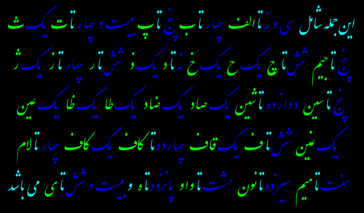
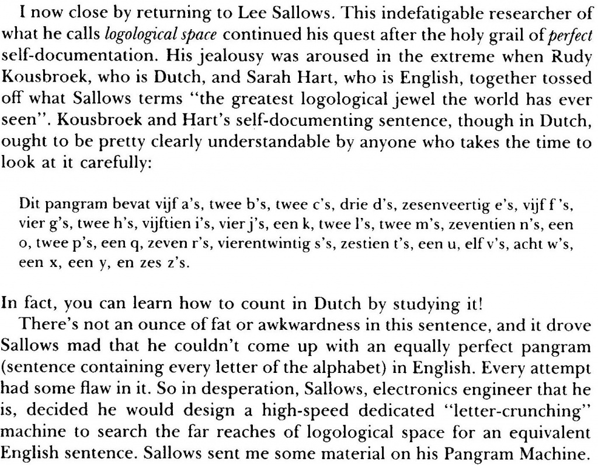

In 2007 I worked at a fun little project. I had a bet with Marcel Vlastuin that I could produce a self-enumerating pangram. This is an example of such a pangram:
“This sentence contains three a’s, one b, three c’s, two d’s, thirty three e’s, seven f’s, one g, six h’s, ten i’s, one j, one k, one l, one m, twenty four n’s, sixteen o’s, one p, one q, nine r’s, twenty six s’s, seventeen t’s, five u’s, five v’s, four w’s, four x’s, four y’s, and one z.”
Pangram, the word coming from the greek pan gramma, literally means “every letter”. The best known pangram is without any doubt “The quick brown fox jumps over the lazy dog.”
But I had to make a self-enumerating one, which counts all the letters in the sentence itself — and with my name in it!
For this purpose I built a small program that could generate such a pangram. It would take the previous sentence, count the characters, and generate a new sentence. When it got the same sentence twice, the job was done. But there was one problem: many times the program would alternate between a small set of sentences, and never get out of this loop. Therefore it was necessary to add a bit of randomness. The original sourcecode was lost when my old laptop crashed, but as I had sent Marcel the generated pangrams, they were still in my mailbox! The pangrams are in Dutch.
“JP vond deze zin, die vier a’s, twee b’s, drie c’s, acht d’s, zevenenveertig e’s, drie f’s, vier g’s, drie h’s, zeventien i’s, drie j’s, een k, twee l’s, een m, twintig n’s, twee o’s, twee p’s, een q, acht r’s, twintig s’en, vijftien t’s, een u, elf v’s, zeven w’s, een x, een y en zeven z’s bevat.
“Deze voor Marcel gegenereerde zin omvat drie a’s, een b, twee c’s, vijf d’s, eenenvijftig e’s, zes f’s, zes g’s, een h, zeventien i’s, vier j’s, een k, vier l’s, drie m’s, tweeentwintig n’s, vier o’s, een p, een q, tien r’s, twintig s’en, elf t’s, een u, elf v’s, vijf w’s, een x, een y en zeven z’s.”
“Jan Paul Posma is trots op deze zin omdat die acht a’s, twee b’s, drie c’s, zeven d’s, negenenveertig e’s, vier f’s, tien g’s, drie h’s, tweeentwintig i’s, vijf j’s, een k, twee l’s, drie m’s, negenentwintig n’s, vijf o’s, vier p’s, een q, acht r’s, zesentwintig s’en, eenentwintig t’s, twee u’s, negen v’s, negen w’s, een x, een y en vijf z’s bevat.”
“In deze zin staan tien a’s, twee b’s, vier c’s, zeven d’s, eenenvijftig e’s, vier f’s, zeven g’s, vier h’s, drieentwintig i’s, drie j’s, een k, vier l’s, een m, achtentwintig n’s, vier o’s, twee p’s, een q, twaalf r’s, vierentwintig s’en, achttien t’s, twee u’s, elf v’s, acht w’s, een x, een y en zes z’s, en is bovendien door Jan Paul gegenereerd!”
Thus winning the bet, a fine dinner. Of course, I’m not the first one to create such a pangram. Below are some earlier examples. A comprehensive history has been published by Eric Wassenaar.
“Only the fool would take trouble to verify that his sentence was composed of ten a's, three b's, four c's, four d's, forty-six e's, sixteen f's, four g's, thirteen h's, fifteen i's, two k's, nine l's, four m's, twenty-five n's, twenty-four o's, five p's, sixteen r's, forty-one s's, thirty-seven t's, ten u's, eight v's, eight w's, four x's, eleven y's, twenty-seven commas, twenty-three apostrophes, seven hyphens and, last but not least, a single !”

